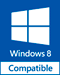
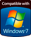
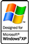

Загрузить
Классическое приложение Crossword Creator, версия 1.3.0.0.



Классическое приложение Crossword Creator, версия 1.3.0.0.
Crossword Creator — это отличное средство, с помощью которого вы сможете составить и заполнить великолепные кроссворды прямо на экране вашего компьютера!
Crossword Creator обладает следующими преимуществами: